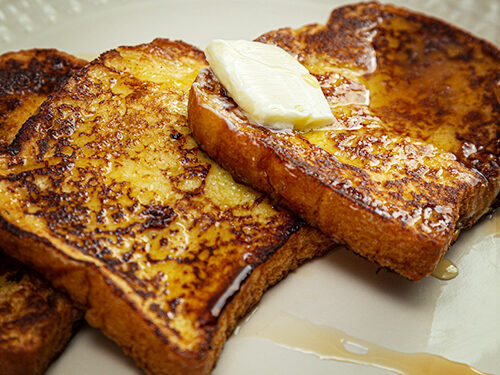

Aunt's French Toast

Description
A simple french toast recipe.
Ingredients
- 2-4 slices of bread, preferably white or brioche
- 1/4 cups of milk or water
- 1-2 eggs (roughly 1 egg for every 2 slices of bread)
- 1/2-1 teaspoon vanilla (optional)
- 1/2 teaspoon cinnamon (optional)
- butter or cooking spray
Steps
- Wash hands thoroughly.
- Break eggs into large bowl and whisk well.
- Add milk.
- Whisk milk into eggs, mixing well.
- Optional: Add vanilla and/or cinnamon to mixture and stir.
- For each bread slice, soak one side in the mixture for a few seconds, then soak the other side.
- Take a skillet and put it on a stovetop. Let the burner heat up.
- Spray cooking spray or melt butter over the skillet's surface.
- Add as many bread slices as can fit in the skillet.
- It takes a few minutes for a side to cook. Check occasionally with spatula until side is golden brown.
- Flip over toast and repeat. When both sides are golden brown, you may plate the slice of french toast.
- Repeat cooking steps for all slices of french toast.